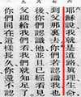
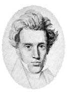
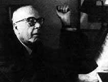

|
|
有哪一个人四天都来的请举手？三天的？两天的？今天第一次来的？非常欢迎你，但是不知道你昨天在哪里？我想大概我从二十一岁开始带布道会，我就决定了每一次布道会有连贯的信息。我不要今天讲一点启示录，明天讲创世记，后天讲诗篇，我盼望整个聚会有一个系统，因为神的道丰盛到一个地步，用几堂聚会讲一个题目实在还是不够时间，所以我们真是需要在生命的过程中间有一些的时刻是整个的交给主让�k来引导我们的思想。
|
圣灵是引导人的上帝，是圣父、圣子所差来的第三个位格。所以我们的生活，我们的思想，我们的事奉，我们的行为中间引导我们的那一位。圣父预备了救恩，圣子成全了救恩，圣灵在施行了救恩的过程中间不但使我们因为圣灵领受了新生命，还因圣灵的引导生活出新的生活。所以这位引导人的圣灵有一个很重要的工作就是引导人的理性 The guidence of Holy Spirit on the reason of human being 圣灵引导人的理性的过程，而把人的理性带进越靠近、越符合、越顺服真理的地步。而圣灵用什么来引导我们的理性呢？只有一件事，用真理来引导我们的理性。所以我盼望我们每一个人在我们生命的过程中间分出一段的时间，让三位一体上帝的第三个位格用真理来引导我们的思想。
有许多人很愿意看见上帝的大工作，但是所谓的「大工作」不照真理来定夺这个层次，就把大工作局限在看得见的，临时的，或者实时产生的神迹奇事叫做「圣灵的大工作」。其实不是如此的，圣灵恩膏膏抹一个人在施行神迹奇事的时候可以很突然的在很简短的时间里面做成一件大事，但是圣灵引导人的思想，从来没有突然的。�k光照你是突然的，引导你进入测不透丰盛的奥秘是需要相当长的时候。而今天的基督教许多许多人盼望过一个不必付代价就可以成功的被圣灵充满。其实圣经里面以弗所书第五章提到「你们要被圣灵充满」，接下来去就讲「当用诗章、颂词、灵歌、彼此对说，口唱心和的赞美主
。」（参：以弗所书：5 章 19 节）在同一段意义的圣经出现在歌罗西书第三章的时候，乃是说「当用各样的智能，把基督的道理，丰丰富富的存在心里。」讲完之后接下去又说：「以各样的智能，用诗章
、颂词、灵歌，彼此教导，互相劝戒，心被恩感，歌颂上帝。」（参 ：歌罗西书：3 章 16 节）所以这两段圣经相较之下你看见一个被圣灵充满的人也就是一个把基督的道理丰丰富富隐藏在内心之中的人。
因为圣灵不用别的办法，只用上帝的道，就是真理来引导人的生活。 这样，如果一个人只管跑捷径盼望做一个立刻成功的被圣灵大大充满的基督徒，而不愿意照着圣经的原则来经历这个被真理所引导的过程的话，这个人的生命没有办法做一个很健全的基督徒的生命，也没有办法活出一个真正照真理的原则把上帝的荣耀彰显出来的生活。所以我盼望基督徒在这件事上不要忽略了圣经的原则，因为圣灵是真理的灵，大家说（重复）。圣灵不但启示真理，圣灵还用真理光照人的心
；圣灵不但用真理光照人的心，�k还用真理引导那些蒙光照的人。不但如此，�k还要带领那些爱真理的人进入神所启示的一切的真理。这样，以真理启示人、引导人、教导人、带领人的圣灵要给我们看见真理的成份是何等的重要，真理的要素是我们不能忽略的一件事情。我
盼望你们从青年的时候就要付代价好好学习上帝的道，不要做一个 instant noodle christian 不要做一个马上就成功的， 像生力面马 上就泡成功的那样的基督徒，那种基督徒没有办法在很丰盛的过程中间把神的荣耀彰显出来，特别是当我们遇到苦难的时候，遇到试炼的时候，我们遇到逼迫的时候，你会发现没有继续不断在真理上受造就的基督徒很难在受逼害的中间彰显上帝的荣耀。这是一个很特别的，
很奇特的一个圣经给我们看见的，也是历史给我们印证的一个事实。 但是一个在真理的造就上下功夫、顺服，把真理丰富隐藏在心中又好好施行出来的人，当他遇到痛苦逼迫的时候，神的话会产生无穷的安慰在他的心中。神的道会给他向两刃利剑一样的力量来抵挡魔鬼给他的试探和攻击，愿主赐福我们在这几天所领受的，实实在在成为我们一生蒙福很重要的一个基础。因为我们愿意在真理上来建造自己，正像圣经所说的「要在至圣的真道上造就自己」（犹大书：
20 节） Edify yourself, build up your spiritual relaity on the holiest word
of God 在上帝至圣的真道上来建造自己。
现在我们一同读几处的圣经，我们看约翰福音第八章三十一、三十二节，以后再读第四十节。
约翰福音八章三十一、三十二节：
耶稣对信他的犹太人说：「你们若常常遵守我的道，就真是我的门徒。你们必晓得真理，真理必叫你们得以自由。」
约翰福音第八章四十节：
「我将在上帝那里所听见的真理，告诉了你们，现在你们却想要杀我 ；这不是亚伯拉罕所行的事。」
约翰福音第八章四十三至四十五节：
「你们为什么不明白我的话呢？无非是因你们不能听我的话道。你们是出于你们的父魔鬼，你们父的私欲，你们偏要行，他从起初是杀人的，不守真理；因他心里没有真理，他说谎是出于自己，因他本来是说谎的，也是说谎之人的父。我将真理告诉你们，你们就因此不信我
。」
我们再看约翰福音第十四章第六节：
「耶稣说：「我就是道路、真理、生命；若不借着我，没有人能到父 那里去。」
约翰福音十八章三十七、三十八节； 「彼拉多就对他说：「这样，你是王么？」耶稣回答说：「你说我是 王；我为此而生，也为此来到世间，特为给真理作见证；凡属真理的
人，就听我的话。」彼拉多说：「真理是什么呢？」说了这话，又出 来到犹太那里，对他们说：「我查不出他有什么罪来。」
约翰福音十六章十二至十四节： 「我还有好些事要告诉你，但你们现在担当不了或作不能领会。只等真理的圣灵来了，他要引导你们明白原文作进入一切的真理；因为他不是凭自己说的，乃是把他所听见的都说出来；并要把将来的事告诉
你们。他要荣耀我；因为他要将受于我的，告诉你们。」
我们读经就到这个地方。
我们再一次低头祷告：
「主啊，求你继续在我们身上显出你的恩惠。主啊，你在软弱人的身上显出你恩典的完全，求主从天上加力量给我们，使无论在台上的或台下的都靠着你的恩刚强起来。主我们中间有一些的人内心深处还有许多的疑惑，恳求你用你的光照耀我们的心，用你纯正的道建立我们纯正的信仰。主啊，你有永生之道，我们还要归从谁呢？主啊，求你今天在我们中间使我们每一个人都愿意照着你的呼召，照着你的感动
，照着圣灵的光照顺服在你真理的面前。主啊，你听我们的祷告，奉主耶稣基督的圣名求，阿们。」

我们昨天谈到最后的时候，我们提到真理并不是站在一个被动性的地步，乃是站在一个主动性的地步。这件事是一个很大观念的突破 ，因为当一个人说「我追求真理，我爱真理，我拥护真理，我传扬真理的时候」，在他的前题里面，思想先假定自己是主动的。是我在寻求真理，我在寻找真理。所以真理不过是我动做的一个「对象」，是我整个生活中间的一个「课题」，我是真理的主体和主动追求者。但我们昨天提到不是我在知道了真理以后，我变成一个永恒不变者，乃
是真理的不变者改变了我。当我知道真理以后，是「我」改变了，不是「真理」改变了。当我知道真理以后，不是我对真理有所充实，是真理充实了我的生命。所以真理充实我，真理改变我，真理引导我，
真理使我得着人生的满足，真理把人生的意义加在我的身上，这些都给我们一个总结论，就是真理是主动而不是被动的，我们昨天就谈到这个地方。当你对这个观念有所突破了以后，你会更思想有关于真理与生命之间的关系。那么圣经很清楚的给我们看见，基督教的信仰从表面看来是很简单的、很浅白、很平易可以了解的一些思想，但是其实在这些字里行间很平易浅白的话语启示里面，给我们非常深奥、超越所有哲学，所有人类文化中间所曾经想出来，所曾经达到的最高的成就，各种思想学说、意识型态、各种的思维系统不能与之相比。在圣经给我们看见，这真理不但是主体性的。圣经给我们看见人与真理的关系，真理不但是主体性的真理，而且真理是供应人的生命，真理在人的生命中间使人因真理而达到提升的可能，达到那已失落而可以得回的更高的价值。换句话说，我们的现状常常使我们不能满足，我们在有限的暂时与无限的永恒观念中间遇到了一个不能避免，也不能够否定的矛盾的实质，
这个矛盾的实质 the reality of conflict in our life in between the
temperality and eternity case of a lot of confusion, pussle and unresolved
problems 这些不能 解决的困难和矛盾常常使我们发现，我们有很高的理想，但是我们有很苛刻的限制。我们有很完美的盼望，我们有不能达到不能提升的地步，但是真理把意义加乎生命；真理把那个价值观提升在生命的里面
。所以我们在真理的了解中间可以恢复那已经失去的，或者不能达到的那理想中间某一些实质。这样，真理的本身就充实了人的生命。
我们也很清楚的看见「人不是真理」。当你说「我爱真理」的时候，当你说「我追求真理」的时候，或者你说「我需要真理」的时候 ，就已经很现实的告诉了每一个人你不是真理，你不过是「需要」真
理，「追求」真理。你「需要」真理，就表示你没有真理；你需要真理就表明你不是真理。所以最伟大的人间英雄，最伟大的哲士，最伟大的知识分子，在他们追求真理的了解过程中间他们已经先把自己「
不是真理」的这件事实显明出来了。所以我「不是真理」我才需要真理，我不是真理，所以我才追求真理。而对真理的追求，基于一个你有能够爱慕，也能够与真理合一以致于了解真理的这个可能。这个可能就是神创造人的时候，那个理性放在人里面的一个很清楚的表达。
所以借着人对真理的了解，对真理的追求，神表达了一个很重要的事实，就是「人是按照上帝的形像和样式被造的」。所以人有「真理的仁义和圣洁」（参：以弗所书：4 章 24 节）。这个对真理的渴慕， 对真理的爱，就使人的命产生了真正的价值。
在圣经里面给我们看见了人的状况中间我们看见了「原位」与「 现位」之间的差别 (the orginal
status and the present status) 。我现在的这个位份，我现在的这个状况并不是我原先被造的时候的状况，而对真理的追寻，对真理的渴慕和爱是不是要得回那原先已经失去的状况而已呢？圣经说不是如此，如果我们只不过得回所失去的
，我们还没有达到神为我们所定的那最完美的计划和最终极性的目的 (The ultimate goal had not been achieved)。 我们如果达到最完美的目的，最终的成就在神的旨意之中不是单单得回所失去的原位，乃是与原本的、创造万有的上帝的本身合而为一。这样，真理的高超
就不是单单在乎所失去的原位的性质和价值的那个层次里面。真理的高超，乃在乎超过所有被造界一切最高的位份，乃是在神自己的里面 。为这个缘故，我们要继续思想下去，我因为真理而有所改变。这样，我「知真理以前」和我「知真理以后」我到底发生了什么变化呢？
我有时候在想，我们在这样的过程中间实实在在没有办法用我们有限的理性去分析清楚，去完全了解我们到底曾经经历过哪一种明白真理的时候那伟大的生命的改变。当你说「我知道了」，当你没有「
知」和你「知」以前，你产生一个变化，这个变化是一去不回头的， 你所知过的事就是知过了，你再回到从来不知是很难的，你有办法退回那个「从来不知」的状况吗？没有办法！而历史是不能重写的。所以，当你把这段过程经历了以后，你也没有办法退回那个没有发生「
我知真理」某一部份真理以前的地步的时候，你已经在真理中间与你之间的关系产生了一个合一了。那么，如果你所知的不是真理，照样 ，你不能退回历史。照样的，你所知道的是反真理的事情的话，你正在玷污你的理性 (You are polluting your reasoning)。
|
所以青年人，当你看好东西的时候，你没有兴趣，看�a脏的，那些不对的事情的时候，你眼睛睁得很大。那这件事请你注意，当你把这些你所谓很感兴趣的，需要或者很愿意明白的奥秘把它看进去以后，你说「我知道了」，你知道什么事呢？你知道一些你爱知道的事，但是你却不知道你已经没有办法归回过去的那种不知邪恶的那种比较严肃的圣洁状况，你没有办法回头。
|
|
所以你脑中应当在年青的时候多多充实真理的东西，而不是多多充满那些非真理的东西，甚至反真理的东西。因为你「知」以后，你没有办法再退回变成「未知」以前的那个状况。你
了解这其间很大的分别吗？这样，你的知识空间，和你的理性功能所能容纳的，在有限度的知识范围应当怎样分别为圣让那真理继续再塑造你、充实你、帮助你，使你变成更完美，更蒙神悦纳在神的面前，
在永恒的过程中间面向永远的家园之前预备好自己，洁身自好让真理支配、约束、控制、管理、引导你。
当我「知真理」和「没有知真理」的时候，什么变化呢？我不能用唯物论的眼光，也不能用科学家的思想来看这个过程。因为当你还没有知道真理以前，和你知道真理以后，是不是脑细胞的方向转了一些东西呢？是不是有什么 Data 进去铭刻在你物质性的脑细胞的记忆功能里面呢？我们很难了解，但是我知道一个很重要的事情 ---- 真理与人一结合以后，这个人一定产生不同的人生观，因为对观念的改变，常常是因为对真理的了解而产生出来的
(The understanding of the truth caused the concept change, the change of
the concept.) 当你观念改变的时候，就照圣经所说的「心意更新而变化 」（罗马书：12 章 2 节）。一个人在一生的过程中间能继续不断心意更新变化，这个人是非常有福气的人。我们有许多许多的事情我们很盼望变化，但是我们的骄傲使我们的思想中间错误的观念不愿意受更正，我们也不愿意产生变化，这是不合合圣经的。我们需要一个经常预备自己，盼望愿意因真理带来的改变，以致于产生新的观念，更加合乎圣经的思想形态的产生，这样的人是蒙福的人。
我没有知真理以前，我是不知真理的。我知真理以后，我知了真理了，但是我没有知真理以前，真理不会因为我不知道而它变成不存在了。真理也不会因为我知道了真理，真理才存在。因为真理的存在与我的「知」与「不知」没有关系。真理的存在是独立的，在它那里自我的存在，
这个独自自我的存在有一个 self sufficiency, self adequency， 这个自足、自满、自我存有的真理是完全不受对真理的了解、不了解者产生影响。我知道真理，真理在那里，我不知道真理
，真理也在那里。我知道真理以后，真理不改变，我不知道真理以前 ，真理也不改变。但是我「知」真理和我「不知」真理这个过程的变换中间是我改变了，不是真理改变了。这样，真理本身就有不变性的本质在里面
(the substance of unchangebility) ； 这个 unchangebility of the truth 是真理的本质里面一个很重要很重要的层面，因为真理是不改变的，所以真理是真理；因为是不改变的，
所以真理不在程序的过程中间；因为真理是真理，所以真理就超越了 一些变幻无常的历史过程。因为真理是真理，所以真理也就超空间、 超时间。这个超时间的真理才有不变的可能；超时间的真理才不受变幻所左右，所支配；超时间的真理就比历史越有价值。因为历史要在对真理的了解中间产生价值，而价值的本身就在真理的本体里面不需要受历史的过程产生左右。感谢上帝，真理就是超空间的，真理就是不变的，这个真理是不变的，是超空间的，所以真理才是真。
不但真理是不变的，不但真理是超时间的，不但真理是超空间的，真理是在主体性里面不受影响的。我们看见，我没有变真理，但是真理改变了我；我不能改变真理，乃是真理改变了我。我知道真理以后，并没有使真理更充实，相反的，当我知道真理以后，真理使我更充实了，对不对？这样，我的生命，因真理而被充实了，不是真理因
为我的知道而更充实了。我因为知道真理以后我受改变，我知道了真理以后我更充实，我知道了真理以后我更向上提升，这样，真理就变 成一个供应生命的东西，而人的生命如果没有真理要变成何等贫穷，何等可怜的状态是我们没有办法靠着自己的理性去完全了解的。
你永远不能想象，如果你与生命、真理完全未曾发生关系，你将过一个怎样的生活？但是，感谢上帝！圣经告诉我们，人就因为对真理的了解产生更丰盛更丰盛的生命。现在我要请大家注意的就是几个很重要的原则一条一条连下去的。真理不因为我的存在而产生了真理的存在；相反的，真理的存在决定了我对真理的认识所带来的福份。
所以真理就比我更大。为什么真理是大于我呢？
|

|
因为我因真理而被充实，真理不因我而被充实；我因为真理而被改变，真理不因我而被改变。这样，真理在主体性的中间�k影响了我，�k引导了我，这样的一个真理是大于我的。我的生命需要真理，不是真理需要我的生命。我的生命因真理而丰盛，不是真理因为我的知识而丰盛，所以真理是大过我的。真理不但供应我的生命，真理也供应你的生命，真理供应他的生命，真理供应外国人的生命，真理供应普世所有寻求真理之人、了解真理之人的生命。
|
所以真理的限度就没有任何一个文化可以给它做局限的。没有任何一种的生命，任何一种的文化可以给真理做一个限制对�k说「你停在里」。为这个缘故，这个超空，超时间，超过生命的理智的这个真理的本身，到底是有限的呢？或者是无限的呢？如果所有的领受真理的人都因一个真理而得着满足的话，这样，所有的真理在人的生命中间产生的改变总合起来比部份更大。你从数学里面看见，「总合」比「部份」更大。「总合」也比「部份」加「部份」
加「部份」.... 更大， 「总合」是最大的，而这个「总合」不等于就是真理的部份。因为所谓的「总合」还是在有限的数目里面产生的
总合，但是这个数目会继续不断的加添，真理还继续不断照样可以供应继续不断加添的生命数目。所以，我们知道真理在无限的地步中间继续不断供应有限的。这样，真理不但是永远的，真理不但是普世性的，真理不但是无限性的。这个不改变的真理、无限的真理、永恒的真理、普世的真理，可以说也就是那绝对的真理。因为真理是绝对的
，所以真理就不受任何一个变幻无常的因素所改变它的本质，这个真理才叫做「真」。
有时我们讲一句话，「你真是笨」，他笨得很「真」，你懂不懂 ？你说「你实实在在错了」，他「错得很真」你明白吗？所以你「真 」是错了。但是当我们反过来讲，你真正是一个很真心的人，在这里你看见了「真」产生了双重的意义。真正的「真」，那么有没有假假
的「真」呢？有没有那不真的「真」呢？有一些不够纯洁的真叫做不 真的「真」。「你这个金是真的吗？」「是真金」。但是是「纯的真金吗？」你说「是真金，不是假的，但是不是纯真金，因为里面还有
一些非金的成份在那里。这些非金的成份掺在其中，这个真金中间有了一些不纯的成份在里面。」那么你说真正的「真」。当你把这个真正的「真」提出来的时候，就是双重的意义了。
这个「双重意义」在我生命中间曾经有一段的时间继续不断的再思考。比方说，当所罗门上帝给他机会说「你要求什么事我给你，你求我就给你。你要求财宝吗？你要求长寿吗？你要求富贵吗？你要求权利吗？你要求什么？」所罗门说什么？所罗门说「我不要求这些」，他说「我要求什么？」 ---- 智能。换句话说，在这些可以达到的，众人所追求的最宝贵的事项中间，他竟然发现比这些更重要的一件才是他真正要求的。他要求「智能」过于「财宝」；要求「智能」过
于「金钱」；要求「智能」过于「地位」；要求「智能」过于世界上 的荣华。请问，他这个选择对不对？他这个选择好不好？他这个选择智能不智能？所以他是以「智能」选择「智能」对不对？他选得很有智能，怎么知道？因为他选得是「智能」。他选得很智能，因为他选择的是智能，他以智能选择智能。这是很简单的例子，所以这个以「
智能」选择「智能」是双重意义在一个事件里面的产生。照样以真正的「真」，那个真正的「真」就是双重意义在一个事件里面。那么， 这个绝对性的真理，也就是不可能有虚假，也不可能被淘汰的真理。
这样，真理的无限性、永恒性、不变性、超时间性、超空间性、独立性、不需要被依靠的、不需要依赖别的而存在的，这些的本质都是「 绝对者」本身才有的本质。以老子的《道德经》二十五章里头所提出的一句话语，他说「道的本身是独立而不改的」。这个「独立」这两个字已经成为各国最欢迎的政体上一个引以自豪的字
independant， 什么叫做 independant？ 就是 not dependant。 什么叫做 not dependant？就是
without depending others， without depending others I can stand on my own
feet。这 independant 但是 stand on what? On the floor，所以 depend on the floor 。这「独立」
的意思是 nothing depend 没有所靠的绝对的独立。所以这样，真理的本身就有这个本体性的性质就是独立的。真理的本身也就是不改性的独立，这个真理到底是怎样的真理呢？我们提到了真理的不变性、
真理的超时间性、真理的超空间性、真理的普世性、真理的无限性、 真理的独立性、 真理的绝对性， 而这真理我们要提到另外一件事情 ---- 当真理可以供应无限的，
或说无可数算的生命的需要的时候， 你再继续在有限的数目再加上去，它还照样供应。人数越来越多的时候，真理照样供应全世界人类的需要。这样，生命因真理而达到更大的价值；生命因真理而产生了有意义的内容；生命因真理而提升了它
原来的位份。生命需要真理，请问，如果真理比生命更大，真理的本身是有生命的吗？我们来到一个很重要的一点 ---- 真理是有生命的！那这句话可能在所有的书里面，人的哲学思想里面没有提到这样简洁而这样大胆的话语「真理是有生命的！」
当你说「我爱真理」的时候，人家问你「你爱哪一种真理？」你说「就是社会要公平那个真理，我爱它」。那你所爱的是什么？不过是真理在人伦之间的公义的表达。所以你所提到的是片断式的真理。
你还记得第一天晚上我提到了「片断而非统一的真理」吗？许多片断的真理在受造界、在物质界、在暂时界、神创造万有之后把一些受造界的「理」和「哲」隐藏在�k所创造的世界的里面，然后让人靠着神所给人的理性去找出神隐藏在大自然中的法则，把这些法则和道理发
掘出来，分门别类，然后教导人学习的时候，这叫做「自然科学」。 而自然科学乃是物质界的理，对整个真理的总合来说，不过是一个部份，是一个片断式的真理。片断式的真理是真理的部份，片断式的真理不能代表真理的整体。而今天我们已经讲到很重要的一点「真理是有生命的」，换句话说，那个整体性的真理不但它供应了生命的需要
， 那整体性的真理本身是有生命的 the truth of life, the truth has life。因为那真理是有生命的，所以真理并不是在我们被造界、
有限界的中间所寻找的一些片断的原则，不是！乃是那供应生命的生命，乃是那产生生命的生命，乃是那引导生命的生命，那真理是有生命的。
|
这句话你要在哪一本书看到呢？这样的事情你要在那一种哲学的体系里面明白呢？而这样的话就很清楚的记载在圣经里面。所以当耶稣基督把自己解释出来的时候，�k讲了一句非常与所有哲学家的文化的巨子绝对本质相异的话语 -- 「我就是道路、真理、生命」（约翰福音：14 章 6 节）。原来我们谈了这么多这么大的道理就隐藏在耶稣自我宣传的那一句话里面。
|

|
所以，在约翰福音第一章说「太初有道 」，这「道」的内涵是什么？第十四章里面就从三方面表达出来了，「太初有道，道与上帝同在，道就是上帝。」「这道太初与上帝同在
，道就是上帝。」「道成了肉身住在我们中间」（参：约翰福音：1 章 14 节）这个成了肉身住在中间充充满满的有恩典，有真理。你看见了没有呢？全本圣经里面有一个不能被隔绝，不能被分散，不能被忽略的统一性和恒常性
The unity and consistency of the total truth in the bible。所以这个道无论是在斯多亚派的思想里，在赫拉克利图斯
(Heraclitus, 544-484 B.C.) 的哲学，无论在印度教的思想，在中国儒教和道家的默想中间的那个「道」没有办法与神的启示相比，因为神把这个道很清楚的提出来，这个道把恩典带到人的中
间，这个道把真理带到人的中间，这个道也住在人的中间有恩典，有恩典、有真理、有同在，表示有生命，有真理，有道路是从神那里来的。
我们继续看下去，这个有生命的真理也就是那个有位格的真理 the person truth。为什么说有位格的真理呢？因为位格之所以是位格
A person is a person that is because the qualification of being a person，乃是因为我有位格的条件，有位格的资格，所以位格才是「位格」。这个名词翻译成中文的时候有一点不知道什么「位
」而格格不入，所以才叫做「位格」。但是「位格」这两个字是什么意思呢？就是一个有自我肯定，自我觉悟永恒存在的那一个生命，叫做「有位格」。所以，动物里面我们看见它们都没有这个位格，在动物的生命里面没有位格。因为他们都没有自我存在的永恒性的觉悟
the eternal consciousness of our own existence。这个自我觉悟存在永恒的观念 I know that I
exsist for eternity, 我这个 existence 是 eternal exsitence，对「我」是永恒存在的自我觉悟 -- 「我知道我存在」，这是位格很清楚的一个本质。
在这个本质里面，位格有三个很基本的要素，第一个要素就是「理智」的要素；第二个要素是「情感」的要素；第三个要素是「意志」的要素。当你说 「我是一个有位格的人」的时候，你的知识、情感、意志，并不只单单关系本能的需要的那一个层次
not only in the realm of the instinct。如果你不过在本能的需要的层次的里面来表达所谓的肤浅的知识、感情和意志的话，那你还不能显出你是有位格的。
我们看动物有感情吗？有。动物有意志吗？有。动物有知识吗？有，每一种动物都有一些的知识，一些很基本的感情和意志，但是这些动物的感情、意志和知识不过停顿在本能的需要的那个层次上，而不是在那个推敲、研究、钻研、演绎和归纳的理智的功能里面。也不在乎那个伟大的爱克服了那个个人的利害关系而把伟大的伦理表达出来那个层次里面。更不在乎那个把自己的意志化成了永恒的顺从在神永远的过程中间能够跟随主的那个可能性里面。所以，动物虽然有感情，动物虽然有理智，动物虽然有意志，它们只停留在与本能相关的最基本的需要的层次的里面，这个不是位格的记号，位格的记号远远本质上是超过那些的。那么我们看见了这个真理是有生命的，真理不但是有生命的，而真理是有位格的生命的。这「有位格之真理的主体
」就是上帝。什么意思呢？神自己用�k位格的真理来与人交往，神以有位格的生命的真理的本体来与人交通。所以，当我们认识真理的时候，就不像那些只在片断的自然知识里面找到一些理性的内容然后就
自以为义的人一样。当我们认识真理的时候，我们乃是在这个真理的源头，有位格的主宰的面前，我们降服于�k，爱�k，顺服�k，在明白�k真理的时候，我们成为属于�k的儿女。这样，基督教对真理的认识和那些非基督徒在堕落理性里面模模糊糊寻找出来一些片断真理与他们之间的关系是完全不一样的。
有多少的物理学家，一方面他的物理搞得很好，性生活搞得乱七八糟。有多少的所谓大的知识分子，他在课堂里面教书的时候头头是道，但是他自己的道德生活是非常非常的不可告人的。为什么呢？因为他对片面真理的认识与他生命之间的伦理没有产生关系。但是基督徒不是如此，基督徒在我们整个认识真理的过程中间，因为知道神就是有位格之真理的生命的本身，所以认识神与敬畏神以及被�k生命的改变以致于我们的生命更像�k，是一个不能缺乏的事情。感谢上帝！
真理是有位格的，我们继续思想下去。这个真理不但是主动的，这个真理不但是绝对的，是超过时间、空间的，是不变的，是永远的 ，是无限的，真理是普世的，是独立而不改的。真理的本身是，也就是道路、真理、生命住在我们中间。我们继续看下去，这个住在我们中间的生命，有位格的生命，�k乃是「主体性的真理」。现在我把「
主动」和「主体性」再分开来。「主动」这方面我讲的时候是在解释位格以前，而现在「主体性」我讲的时候，乃是在解释位格之后。什 么叫做「主体性的真理」呢？我给它一个英文的名称叫做 subjectivity of the truth； subjectivity of the truth 和
subjective truth 是不一样的。
（请你坐好一点好吗？在比你大一点的年纪的人面前坐好一点比较有礼貌，大家坐得好一点，谢谢你们。你们年纪轻轻，传道人站得很辛苦，你们坐得不象样，真是不象样。好，大家坐好一点，脚放下去，比较合真理。你不能听真理而不像真理，对不对？因为这是位格的交通，我们继续讲下去。所以我不大喜欢我的录音带卖给那些没有参加的人，因为他凭着几块钱就可以听这些东西了。但如果你自己来听，你坐在那里好好听，真正渴慕听，我是比较更尊重这样的人。这几句话也录进去给那些买录音带的人听吧！）
思考真理的时候而没有觉悟到需要敬畏这一位我们思考真理的上帝，那是很危险的事（昨天提过这个事了）。我们继续讲下去。
|

|
我这里所提的「主体性」和十九世纪祁克果 (Soren Aabye Kierkegaard, 1813-1855) 所提的「主观真理」是不一样的。他在历史的中间，在哲学的过程中间到了十九世纪产生了一个很大的突破，这个突破震撼了二十世纪一些最有头脑的人当时还没有成就以前已经受他的思想影响。所以在十九世纪结束的时候，祁克果已经正在震撼了一些将要影响二十世纪的大思想家的头脑。我盼望我们也有一些人也受了震憾以后影响二十一世纪，否则的话这个世界的历史是没有前途的。
|
祁克果在哪一件事情上带来很大的震憾？而这个震憾又震憾了哪些人呢？受他影响的人包括巴特 (Karl Barth,
1886-1968)、卜仁纳 (Emil Brunner, 1889-1966) 、 马丁布伯 (Martin Buber, 1878-1965)、 布特曼
(Rudolf Bultmann, 1884-1976)、 海德格 (Martin Heidegger, 1889-1976) 、 沙特 (Jean
Paul Sartre, 1905-1980)、 雅斯培 (Karl Jaspers, 1883-1969)、 卡谬 (Albert Camus,
1913-1960) 还有许多许多其它的知识分子，包括天主教的马利坦 (Jacques Maritain, 1882-1973) 、 贝德叶夫
(Nicolai Berdyaev, 1874-1948) 、 包括马色 (Gabriel Marcel, 1889-1973) ，还有其它的知识分子，我现在不谈到他的影响有多广。但是这个人把真理当做不是客观性的，而是主观性的。我们平常说「你讲的太主观了，那照你的看法来讲，请你客观一点好不好？」你讲过这句话吗？换句话说，「你所讲的东西让大家都能接受吧，不要单单从你那方面看过来。」但是祁克果就反对这个事情，他说：「真理是主观性的
」，意思就是说所谓「客观真理」是理念界中间的一个不能捉摸的东西，但是如果你是亲身经历过以后，你可以在真理中间享有一些曾经主观经历以后的那些把握。所以这个叫做「主观性的真理」
(subjective truth)。
在许多的事情你知道，你的「知道」是理念界的一种知识掠过你的理性。但等到你亲身经验以后，你说「我现在懂了，我知道了」， 这个「知道」就不是课堂里面的知识、图书馆里面的书籍、或者教育系统里面的学位所能给你的。用很简单的比喻来说，约伯记讲过一句话说：「我从前风闻有你，上帝啊，我如今亲眼看见你。」（参：约伯记：42 章 5 节）你读过这段圣经吗？「我从前风闻有你，我如今亲眼看见你。」
我曾经做过一个比喻，有一次我们两个孩子大概九岁的时候，我和另外的一个同学在那里玩弹子，一面在地上玩，一面在那里批评我们的一个老师。当批评的时候越讲越厉害（小孩子都是坏蛋得不得了的，越聪明的孩子越坏蛋，我的意思是越坏蛋的可能越聪明），我们在批评他的时候说：「我看他真是不象样，
我真是不喜欢他.... 」，讲到一半的时候，忽然间一句话来了：「你们在讲什么？」当那一 句「你们在讲什么？」出来的时候，我马上认得那就是我们正在批评的那个老师的声音。
马上我们不知道应当怎么样应付这时刻 this particular moment is so terrible。为什么呢？因为现在谈的他不是一个「他」，是一个「你就在这里」的「你」。所以刚才在谈的时候，他是一个「他」，这个关系和位格不在这里，但是现在谈的那个「他」已经变成正在看着我的那个「他」，而我如果我回头一看他变成「你」不是「他」。你明白这个不同的地方吗？所以我慢慢的慢慢
的盼望不是他，但是又不能肯定不是他。所以我们带着很大的理想盼望回过头看的时候是一个很像他而不是他的人。那么，这个存在和位格之间的紧张关系就可以解除了。但是，当我们慢慢转转到最后眼光
一触的时候，真的是他！他再问「你们讲什么？」我们那个时候，只能「嗯....，嗯.... 」。 「你嗯什么？你们刚才讲什么？」那你了解了吗？这样， 对他存在位格际之间的
encounter 这个正面交锋的关系所带来的对老师的那个觉悟、体会和知识，和当时只有谈谈他而已是完全不一样的。
有许多许多的时候我们的知识是「风闻而来的知识」，有许多时候我们对真理的了解是照书抄书的了解。有许多时候我们所谓的「我 明白了」、「我是受教育的人」，不过是从脑中闪过别人的一些经验和我们毫无关系的知识。但是，当你亲自经历了，亲自的了解了，亲
自在感观过程中间受了刺激，亲自在当场的位份中间受了同样的遭遇以后，你那个知识是完全不一样的。当这个知识已经变成你生命一部份的时候，你再讲的时候你不一样了，很不一样。那个就是祁克果所
提的「主观性的真理」。
人家做寡妇，你说「不要紧啦，主是照顾你的，因为圣经说耶和华是寡妇的伸冤者，是孤儿的父亲，你听见了吗，明白了吗？」我告诉你，不要问她「明白了吗？」你自己不明白。最讨厌的人就是那些
一天到晚盼望你明白而自己不明白的人。最讨厌的劝人就是先误会你然后再一直劝你，令人做呕。而今天如果我们对生命的经历没有到一 个亲身过来的那一种阶段的话，我们对真理的了解是肤浅得不得了的
。但是我要从头解释另外一句话，否则你们会进到另外一个极端。「 如果我们没有经历过的事，那我就绝对不可以讲吗？」不是的，如果什么事都要经验过才可以讲的话，那么你就从来不可以谈天堂、地狱
，因为这两个地方你都没有去过。有一些人很轻看别人，因为他没有经验他就讲什么？「我根本不会听他的话，因为他没有经验的。甚至他自己行不出来，你还要听？」你说「哪里圣经有这样教？」你说「
有」，耶稣说：「法利赛人坐上教训人的时候，你们要听他，却不要效法他们的行为。他能讲不能行。」（参：马太福音：23 章
2-3 节 ）他讲的若是真理，你还要听。他讲的若是真理你还要听，不能因为 他没有行出来你就不要听，真理还是真理。但是当真理经过你个人的经历，挣扎以后产生的了解，那个可靠的程度，那个宝贵的程度是远远超过你不过在知识的理解中所闪过的那些别人给你的那些条件，给你的那些记号而已，这是很清楚的一件事情。
但是，在这里我要讲的并不是祁克果所讲的「主观真理」，我在这里所讲的是要跳跃过他，比他更深一层的是「主体性的真理」，也就是「真理的本身是永远站在主体性的地位」，
它不是一个 object ，它是一个 subject。所以当你提到 subjective truth 的时候，你是经历真理才讲出来的。你本身还不是真理，这就是这一天，第四天我们所提到的，我经历真理、我了解真理、我明白真理、我爱慕真理这证明我不是真理。但是当你说「我有主观性真理」的时候，因为你经历了真理的一部份才讲出来，但是这还不能把你和真理合在一起，
因为真理还不是你，你还不是真理。但是，这里我要提到的所谓「主体性的真理」the subjectivity of the truth 这个「主体性的真理」意思就是说因为真理是有位格的，真理又是主动的，真理又是生命的，而这个生命是供应众生命的生命，所以这个真理是主体性的真理。什么叫做「主体性的真理」呢？就是在真理的面前你永远是一个对象，永远不是个主人。在真理的面前你永远是一个客体，永远不是
一个主体 You are always an object before the truth, you will never play the
role of subject before the truth。 真理是主体性的，所以当我们思考真理的时候，乃是真理正在引导我们的思想，不是我来思考真理。
|
当我爱慕真理的时候，也就是真理正在吸引我的时候，不是我正在爱它，乃是它正在吸引我去归向它。正像向日葵当它转过来看太阳叫做「向日葵」的时候，我所看见的不是向日葵的力量，我所看见的是太阳吸引它的力量，你明白吗？当你看到这一点的时候，你才会在认识真理的面前做一个谦卑的人。
|
|
我再讲一次，When you truely understand the subject of the
truth, that you can remain humble before the truth which you are knowing，你知道了真理，你认识了一些真理，你拥有一些的真理，不可能使你成为骄傲，如果你认识真理永远是站在主体性的地位上。因为真理是站在主体性的地位上，所以你对真理的知识会继续不断使你产生无穷无止境谦卑在真理的面前。这样，就没有一个人可以因为他知道的比别人多就变成骄傲，夺取上帝的荣耀。反过来，如果你没有发现真理的主体性，而你试试看把自己当做主体来面对真理的话，你的危险会大到一个地步，你越以为你懂得真理的时候你就离开真理越远。我再讲一次
，如果你不把自己站在一个客体的地位来了解真理的主体性的话，你有一个很大的危险，你越明白真理的结果要使你离开真理越远。
你说「怎么有这个可能呢？」我越明白真理越离开真理越远吗？有这个可能。耶稣基督讲了一句很少宗教家提过的话语，他对那些要逼害他，要捉拿他，要杀死他的犹太人讲一句话，「我将真理告诉你们，你们就因此恨我。」（参：约翰福音：8 章 45 节）我将真理告诉你们，你们就因此想杀我；我将真理告诉你们，你们就因此不信我 。你看，只有基督以位格真理的本体性来到人间才看见人所谓的「爱真理」虚假到什么样的程度。
小的时候我们不明白为什么有一些的教育家研究教育学到博士的地步，孩子教得乱七八糟；有一些从来没有读过教育系的妈妈，个个孩子很成功。那时候我在想，有没有搞错啊？哪个错了？教育博士教不成好孩子，而没有读过书的母亲把几个孩子个个都教得很成功。这为什么呢？哪一个更靠近真理？
真理不停留于理性，真理也不做理性的奴仆。如果你把真理当做理性的奴仆，你把你自己的理性高过真理，把自己站在主体性的地步 ，把真理当做客体性的地步，你要利用真理，你要支配真理的话，你越「明白真理」，所谓你「明白真理」是使你更离开真理。就在这种定律的下面，你看见宗教可能产生最可怕的人，教育可能教导更可怕的魔鬼，更有智能的撒但，更聪明的狡猾者。你也可以看到所谓只有「理性」知道真理，而心理没有归向真理的人成为人类最大的危害者
。最会破坏法律的可能是法律专家；最会破坏经济的，可能是经济博 士，最会败坏上帝的家的，可能是教会的领袖。所以基督死的时候， 不是无神论把他杀死的，是大祭司把他交出来的。基督被钉十字架的时候，是宗教的领袖用仇恨把他交出来的。「我将真理告诉你们，你们就因此想杀我吗？」（参：约翰福音：8 章 40 节）「我把从主那里的真理传给你们，你们因此恨我吗？」「我把真理告诉你们，你们就因此不信我吗？」你看见了没有呢？我讲这些话不是要你恨教会，
也不是要你恨教会的领袖，或者那些对你不好的人你说「就是这句适合于你」。因为我讲这句话的意思就是要你提防你自己不要做那样的人，不关别人，只关你。否则的话，你就是把真理当做被利用，你把自己又当做主体，就是你很危险。
求主帮助我们，当我们看到这些很连贯性的统一关系的时候，你明白了耶稣基督说「我就是」（道路、 真理、 生命） I
am the truth, I man the life, and I man the way。这个主体性的真理�k不但是主动的，是生命的，是位格的，这主体性的真理也就因为�k是主体性的缘故产生了很重要很重要的两个工作。第一个工作就是「真理的启示与光照」。第二、就是「真理的讲解和引导」。什么叫做「
真理的启示与光照」呢？revelation and illumination。 在希腊文里「启示」这个字就是「把奥秘打开」这个 disclouser
of the secret, the disclosur of the mystery。把奥秘打开来，这个叫做 「启示」。上帝是启示人的上帝，上帝把这个奥秘向我们显明出来的时候，你看见了，你看见了奥秘，你说「我知道了」，「我明白了」
，「我看见了」，这个叫做「启示」。所以真理的本身也成为「启示者」，因为真理的本身成为启示者，所以你不奇怪圣经告诉我们圣灵又叫做「真理的灵」，因为�k是启示真理的那一位，�k是启示者，�k是把真理带到人间的。昨天我提到今天有许多灵恩派的人对圣灵的工作所了解的是在一个非常狭窄很可怜的地步。因为他们对圣灵最大的工作看不清楚，只看见了就是那些比较次要的关于医病说方言的工作
。而圣灵最大最大的工作就是把真理从天上带到人间。真理从天上带 到人间使那些明白真理的人可以从地上带回天上，这是圣灵最大的工作。所以圣灵把道带到人间的时候，�k就用两个层次把这伟大的工作就出来。第一、就是「道成为肉身」。第二、就是「道成为文字」。
在肉身中间的道就是基督在历史的显现。在文字中间的道，也就是神的话在圣经中间的记载。这样，「基督」和「圣经」就成为神引导人明白真理的启示的两个大的内容。
上帝借着基督启示了�k自己，上帝也借着圣经启示了�k自己，「基督」和「圣经」就成为上帝特殊启示的高峰。而基督在历史的显现就变成是这个启示最具体，最高峰所存在的一个形式要向人显明那永恒的旨意。感谢上帝！这样，真理的主动性就把这启示带下来了。真理不但把启示带下来，�k继续不断做另外一个工作就是光照人的思想，使人的思想回到神所启示的真理那里去。第一个晚上最后一段我提到那里了，理性归回真理，这样，「领受启示」有结束的一段时刻，
「领受光照」就变成继续不断没有停止的时刻。启示会结束，所以现在再没有启示了。现在所存有的那个不停止的启示只一样，就是「普遍启示」 The general revelation is continuing all the time until the end
of the history。「诸天述说上帝的荣耀」，今天述 说，明天述说，在耶稣基督再来以前的任何一个时刻，诸天都在述说 上帝的荣耀。所以普遍启示没有结束的一天直到历史在
omega point 里面做终点的时候才结束。但是，普遍启示虽然不停的向人显明神的存在，特殊启示早已经结束了。所以当这本圣经已经完全记载结束以后，就再也没有特殊启示了。所以今天若有人说他「再领受上帝的启示」，你要非常严谨，很谨慎的保留的不能随便接受这些话。那些人不过是误解了这主动性有位格的真理施行启示工作所带来的另外一件的工作，也就是「光照」。启示圣经的圣灵，不但启示了，�k还负责把人带到�k对真理的光照的地步的中间。
|
|
这样，在这里有几个字是我心中要告诉你的奥秘，因为已经写出来了，所以就表示启示已经放上去了，但是你没有办法看出来，为什么呢？因为没有光照（没有开投影机）。有没有启示？有。有没有光照？没有光照，你明白吗？光照的作用乃是把启示再一次的引导显明出来。所以（开投影机）你看见了，当光照的工作一出来的时候，已经有的启示就显明了。
|
「光照」不等于「启示」，「启示」不等于「光照」。「启示」有结束的一天，「光照」要继续下去。所以光照乃是使人明白所已经启示的真理。这样，我盼望大家明白圣经的原则以后，不再随便讲胡涂而不能负责任的话语，我盼望大家对神的道的原则有很严谨的认识，交待清楚，遵行出来的时候不是含糊，也不是不负责任的。启示已经在那里了，但是当光照没有行出来的时候，我们没有办法明白这个启示。所以圣灵继续不断的在已经启示的圣经里面继续做光照的工作
，在领受启示的人身上就是那些使徒、先知所写下来的话身上圣灵以吹气的方式启示、默示了上帝的道。但是在那些领受使徒、先知教训教会历世历代信徒的心中圣灵再用光照耀他们的心，使他们明白已经启示的圣经。这样，「启示」与「光照」都是主动的由圣灵来做的。因为这个有位格的真理，有生命的主体性就是三位一体的上帝。不但如此，�k把这个被光照的真理继续不断在我们心中解释，所以我们不但一方面领受传道人所讲解的，我们一方面也顺服圣灵为传道人所讲
解的，所做的那些合乎真理的是圣灵所结的，所给我们见证。我们「 为这事做见证」，使徒行传五章三十二节：「上帝赐给顺从之人的圣灵，也为这事作见证。」当圣灵把上帝的真理光照清楚的时候，它就如同光一样解开发亮照明我们的心。这样，圣灵讲解。
我请大家注意，我不赞同，我照我所记得的，我也不曾祷告「主啊，求你帮助我们释放你的话语」。你用这句话吗？「主的仆人要释放你的话，求主给他力量」，谁有资格「释放主的话」？是不是主的话被绑到透不过气来，你把它释放了，�k才感谢你？如果你知道真理是主体性的，就没有一个人可以释放主的话。因为当你讲「释放主的话」的时候，你就是把真理当做是客体性的，把真理当做是被动性的
， 你发现了没有？ consistency of thinking, consistency understanding
of the truth 是一件多么大的事情， 所以连这些词句都不能随便的。所以现在许多的青年不要好好学，只要马上奉献马上做大布道家。我注意听他们讲就知道句句漏洞，求主帮助我们。
圣经没有说「上帝的话需要被捆绑，然后需要被释放」的，圣经只有说「上帝的道却不被捆绑」（参： 提摩太后书：2 章
9 节）。 但是圣经说「主的话一解开」（参：诗篇： 119 篇 130 节）你说「 解开」和「释放」不是一样的吗？不一样的，因为「释放」是人要做 的工作，主的「仆人释放主的话」，而「解开」是圣灵的工作。因为
圣灵帮助你明白圣经的时候，上帝的道就解开了；一解开的时候你就看见亮光了，所以主的话一解开。我只敢祷告说：「主啊，求你给你 的仆人把你的真理讲解清楚。」「求主给你的仆人把你的真理讲解，讲出来，解释出来」的时候，而是圣灵把上帝的道解开来的。引导。
耶稣说：「这个时候我还有许多事我不能告诉你，只等真理的圣灵来了，他要引导你们进入一切的真理。」圣灵叫做「真理的灵」， 因为�k是启示者，�k是光照者，�k是分解者，讲解者，�k也是引导人进入真理的。这样，我们看见了什么叫做「信仰」，在这四天我很少有机会谈到「信」，就谈到「理性」、「真理」，但是在我结束以前，我要把这个名词交待了，在以后的机会如果有可能再谈到一些关于信仰的问题。
我的理性是神所造使我能明白真理的工具。当我的理性所思想的内容是真理的本身的时候，不是我改变�k，是�k改变我；不是我充实他，是�k充实我。结果，这个引导的的功能就把我那错误的、迷失的的理性把它带回到真理的本身来。这个「带回」就是使我所思想的能忠于、能适合于上帝那永远的灵。这个「忠」的本身就是「信心」的意义，faithfulness of the resaoning。
当你注意看好的 stero 的时候，好的音响器材的时候， 你会发现有一个很特别的地方。那特别的地方不是特别大声，或者特别高音，
或者特别低音，或者特别强劲 punch, sateless 不是，最大的特点（你们如果喜欢音响注意听下面的话）就是它「忠于原音」。我说「哪一种扬声气
(speaker) 好你的意见如何？」一个人对我说， 「 这个可以听 Jazz， 那个可以听 classic，这个听 rock music 比较适合....
」我就知道这个不懂什么叫做音响了。 好的音响不是说「 适合听哪一种音乐」， 一个好的 speaker 哪一种音乐它都要忠，你明白吗？在印尼有好多不懂音响的人大卖音响器材。我为什么说他不懂音响呢？因为他根本没有原本的认识，只有副本的认识，你听懂吗
？如果你听有人说「某某人很像唐崇荣」，我要问你的第一个问题「 你见过唐崇荣吗？」你说「没有，我只见过他的像」。如果你只有见过我的相片的话，你说「某某人很像我」，你只能说某某人很像他的相片，你懂了吗？像他的相片还要问「哪一张」？因为他照过了几百张照片，像哪一张？像那最丑陋的一张？或是像那最好看的一张？如果像最好看的一张，这个人是
photogenic。 那么，你越像就越「不像」了，因为是像他不像的那最好看的一张。如果像的是他最难看的 ，而他本来又是非常不 photogenic 那他的不像也还是不像，他的像还是不像。所以你说「你很像」，什么叫做「很像」？很像原来那个人，位格性的真理。照样，当我的思想走错路的时候，谁带回来？为什么美国在过去很少能产生好的
speaker？美国西部产生的 speaker 包括 JBL, INFINITY 这两个大名牌，在东部产生了很多 BOSE, AR。 为什么在西部的从前不大好呢？因为西部没有好的交响乐，现在西部有一些比较好的交响乐，
Philharmonic in Los Angles 还有 San Francsico Symphony 这些比较好的交响乐团开始有了。 而东部一向有很好的交响乐，
New York Philharmonic, Boston Symphony, Philadelphia Philhomonic, Chicago
Symphony 还有 Cleveland Orchestra，这五个最好的交响乐他们是很严谨的。
|
直到今天最严谨的 Cleveland，因为 Cleveland 在调音的时候连那个三百八十级才是Ｃ调，他还是照常顺服那个原来的记号。但是 New York Philharmonic 把它加一点点听起来比较 bright，比较好听。但是 Cleveland 不要。塞尔 (George Szell, 1897-1970) 在 Cleveland 用几十年的时间把那一个不象样的小交响乐团弄到世界第一流的交响乐团到现在定下一个规矩不能变，Ｃ调的音符三百八十级就是三百八十级不能变。
|

|
那么这样，要忠于原来的音， 做 speaker 的人到底怎么做呢？做 speaker 的人就坐在那里听....，「咦，
这喇吧声音是这样的。」「咦，提琴声音是这样的。」有的提琴声音拉出来你再听变成「胡琴」。 有的喇吧吹出来你再听的时候变成 Trombone。 所以这个 speaker
好不好，不是在乎能多尖，能多高，能多低，能多强劲，有多大的 strong punch，不是！在乎它与「原音」有没有差别， 你明不明白我的意思？如果提琴拉出来就像拉提琴的在你身边拉，鼓打出来就像鼓不像铁桶，那么你就知道这个是好的
speaker。那从这个角度你去看， 什么叫做好的 stero 呢，好的 fidelity 呢？就是忠于原来的音的。 怪不得在英国许多好的
speaker 中音特别强，英国的 speaker 的低音和高音不是太强，但是中音特别好，因为他们很注重 vocal，很着重钢琴和提琴的声音。 这样，中音表达得很像的时候，真像人的声音。但是在印尼我看见很多从来没有听过好的交响乐的，那些人只懂得副本不懂原本，
买 speaker 的时候买扩音机 (amplifire) 每一个高音 (treble) 把它弄得最高， Bass 也弄得最高，结果男人的声音像女人，女人的声音像鬼，鼓的声音像大炮，小鼓的声音像铁桶。乱七八糟，很响，刺耳刺得要命。我心里想「可怜他们，不懂原音。」那我要告诉你一件事情，「懂原音」，懂原音的人才是知音的人。
如果你明白这几天讲的，我告诉你，你的生命要受很大的刺激和改变。现在许多人传道，传的时候是离开圣经的真理很远的，特别是你要谨慎那些常常批评别的教会不对只有他们才对的。如果你懂原音
， 你传的时候有一个原则，要忠于原来的理， 忠于那真正的理 faithfulness to the
origional truth。 这个 faithfulness 的意 思就是 return， always return， return to
the truth, to the source of the truth，回到真理的本体界， 回到真理原先的功用， 原先的表达，原先的价值，归回，归回。所以请你注意圣经里面很重要的一个课题：「以色列啊，你要归回！亚当啊，你在哪里？回来吧
，浪子回来吧。」亲爱的朋友，我可以告诉你，可能你是理性的浪子 (rational prodiagl son)。 理性的浪子不要让真理约束你的头脑， 你要自己乱想一通，自以为义，「我要这么想怎么样？我要那么想怎么样？上帝不是给我们自由吗？」是的，自由不受约束很可能变成「
自杀」。所以理性的浪子怎么回头呢？就是当上帝的真理引导你，光照你，你觉悟的时候，你发现你的错失，这个真理的圣灵就引导你， 耶稣说： 「只等真理的圣灵来了，
他要引导你们进入真理。 」 Go back, return and enter into the truth。 当你进入真理的时候， 你才懂得什么叫做「忠于上帝」，你才懂得什么叫做「真正合理的价值」。
最后，我要把这个「理性归回真理」用一个字来表达，什么叫做「真理」？什么叫做「信心」呢？「信仰」就是「归回」。「信」在「理性」这方面就是「理性的归回」 the return of the reason to the origional truth that is called
faith。 英文的 faith 希腊文是 Pistis，拉丁文是 fide。 fides 变成 des 意思一样，音不大一样，所以还没有「归回原音」。那么，我今天不用希腊文，我用你们比较懂得拉丁文。你说「我哪里懂拉丁文？」你们已经平常听一个字叫做
Hi-Fi。 我问美国一个很爱听 Hi-Fi 的说「你知道什么叫 Hi-Fi 吗？」他说「我也不懂什么叫 Hi-Fi，Hi-Fi 大概就是 Fi 比 较
High 吧。」 Hi-Fi 是 High fidelity；fidelity 是从 fide 来的。fide 的意思是「信心」，而 Hi-Fi 的意思是「高度传真」，「
高度忠于原来的真实」，高度忠实，高度真实。 好的 Hi-Fi 给你坐在那里听的时候眼睛一闭，好象整个交响乐团真正在你面前出现了。 这个 Sound
image overhead 这个许多许多的东西使你感觉到 You are now really in that position, You are
within the performance, You are now witnessing the total performance before
you。这个传真就在你真正的形像重现的时候，你说「唉呀！ 这个是好的 speaker 」这个叫做什么？这个叫做「忠」， 而这个「 忠」就是拉丁文所说的「信」。所以我告诉你什么叫做「理性」，什
么叫做「真理」，什么叫做「信仰」。「信仰」就是「理性归回真理 」。什么叫做「真理」？就是原先要我们的理性归回的那个原本的本体。什么叫做「理性」？就是能够忠于真理的思考功能叫做理性。「
信心、真理与理性」，当你听完这四天以后，我回头问你：「你真的是一个有信心的人吗？」你不敢随便乱说，你忠于上帝的真理吗？你忠于那一位说：「我就是道路、真理、生命」的基督吗？你对真理的认识是片面的，是部份的，是非统一性的片断真理吗？或者是那统一
的，完整的，有生命有位格的那本体的本身？在这本体性的真理面前 ，你只能顺服和忠心。我们各人如羊走迷，上帝使我们各人的罪都归在他身上，他引导我们回到�k的面前来。请问，你愿意不愿意做一个顺服真理，忠于真理的基督徒呢？你不是回答我，你回答你的主。
我们低头祷告：
当我们低头闭眼睛的时候，我要很严肃的问两个问题：有哪一个人你说「主啊，求你帮助我，让我一生一世忠于真理，顺服你，归向你，一生一世在你真理的下面承认你是主体性的位格，和我以客体的身份顺服的责任，我在这里，求主帮助我，请你把手举起来，举了就放下去。感谢上帝，好几百个人，举了就放下去。
我问第二个问题，有哪一个人说「主啊，求你帮助我让我对真理有更广泛，更深入，更正确的认识，好叫我不偏行己路，越来越歪曲离开、冲淡、甚至悖逆了你的道理，求主给我力量。」这样的人你安静，我不叫你举手，你自己在主面前祷告。
第三样，有哪一个人你说「主啊，若是你肯用我，我预备自己愿意奉献成为真理的出口，传扬你的道，研究你的真理，传你的福音，领人到你的面前。不单自己忠于你的真理，我要把许多理性的浪子带
回羊圈归向你真理的下面」，有这样的人请你把手举起来。感谢主， 举了就放下。若是神要使用你做�k的仆人，做�k的见证人，求主向你显明�k为你所定的旨意，对你身上的呼召和给你的恩赐。我们低头祷告。」
|